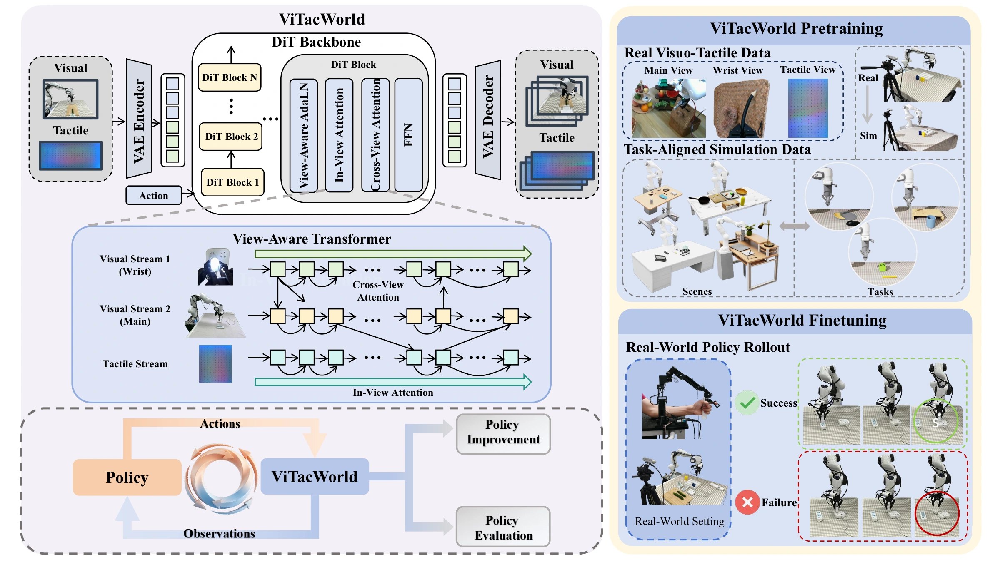
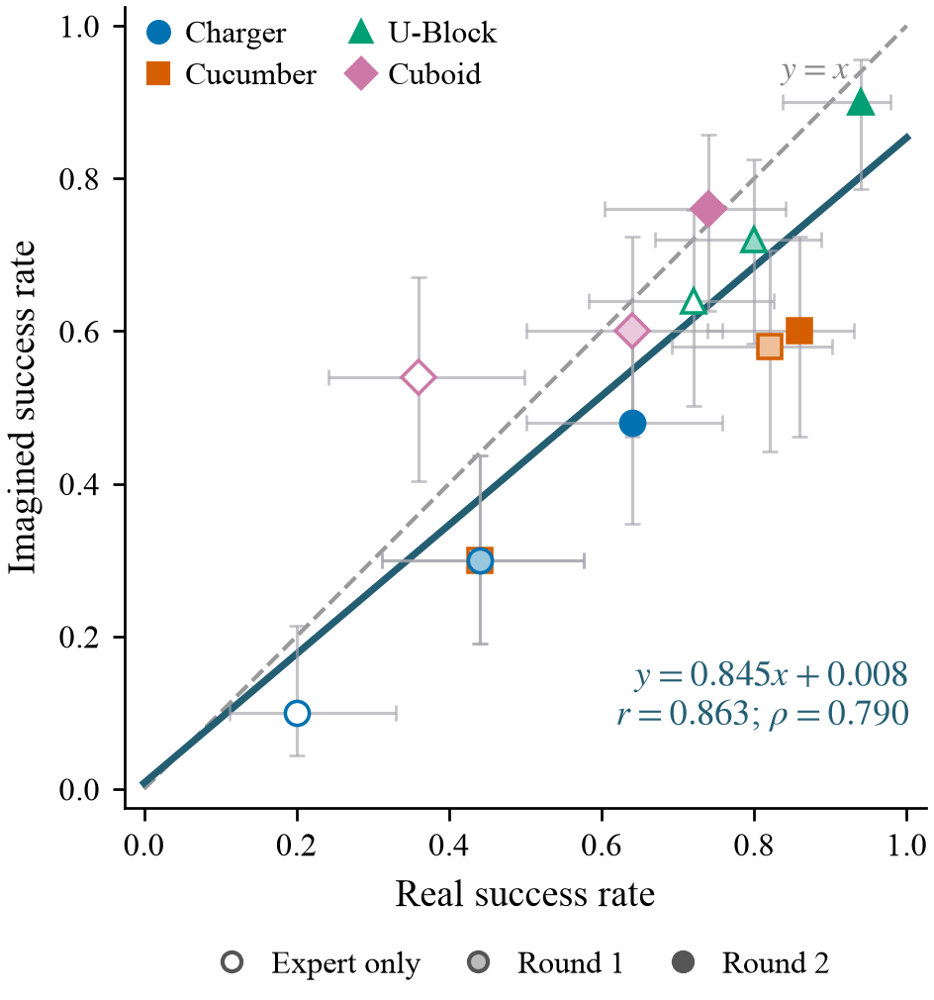
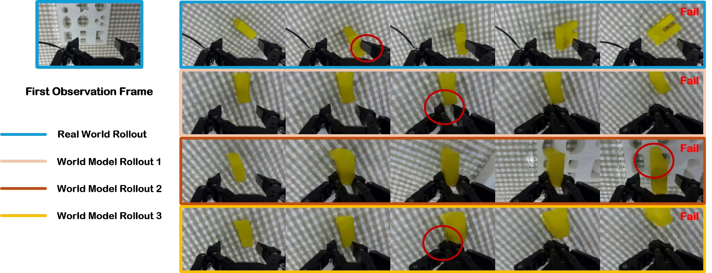

ViTacWorld: Scaling Visuo-Tactile World Models
for Contact-Rich Robot Manipulation
1 ShanghaiTech University2 InstAdapt* Corresponding author
A world model that imagines vision and touch
to improve and evaluate tactile robot policies.
Video overview
Abstract
Contact-rich robot manipulation requires physical interaction cues that are often invisible to cameras, making tactile sensing essential for robust control. However, scaling visuo-tactile robot learning remains difficult because real tactile interaction data are expensive to collect, hardware-dependent, and limited in task and scene diversity. We present ViTacWorld, an action-conditioned visuo-tactile world model for scalable contact-rich robot manipulation. ViTacWorld leverages public real tactile datasets and a constructed simulation environment to scale visuo-tactile-action data, exploiting the fact that tactile signals are directly grounded in physical contact and can exhibit a smaller simulation-to-real gap than purely visual observations. The model is first pretrained with large-scale real and simulated visuo-tactile trajectories, and then finetuned with real-world policy rollouts to better match downstream manipulation behaviors. Given robot actions, ViTacWorld predicts temporally aligned visual observations and tactile feedback, enabling visuo-tactile-action rollout generation. To the best of our knowledge, ViTacWorld is the first framework that uses a world model for robot visuo-tactile-action trajectory generation and policy evaluation. It serves two roles: synthesizing rollouts to improve downstream tactile policies, and evaluating policies by predicting action-conditioned visuo-tactile outcomes under controlled action sequences. Experiments on contact-rich manipulation tasks show that ViTacWorld generates physically meaningful rollouts, improves policy performance through scalable data augmentation, and enables action-conditioned policy evaluation.
Generating vision and touch, together
Robot actions condition temporally aligned predictions of the main view, wrist view, and tactile observations.

Generated touch improves tactile policies
Success increases across four contact-rich tasks and two policy architectures, with further gains from a second augmentation round.
50 real-robot trials per task, policy, and training stage. Each round adds 200 selected generated rollouts to the 300 expert demonstrations, yielding 500 and 700 training trajectories.
| Training data | Policy | Charger Plugging | Cucumber Peeling | U-Block Insertion | Cuboid Insertion | Avg. |
|---|---|---|---|---|---|---|
| Expert only | ACT + tactile | 4 | 8 | 32 | 24 | 17.0 |
| π0.5 | 18 | 28 | 48 | 28 | 30.5 | |
| π0.5 + tactile | 20 | 44 | 72 | 36 | 43.0 | |
| Expert + Round-1 rollouts | ACT + tactile | 14 | 22 | 36 | 32 | 26.0 |
| π0.5 | 34 | 60 | 68 | 42 | 51.0 | |
| π0.5 + tactile | 44 | 82 | 80 | 64 | 67.5 | |
| Expert + Round-2 rollouts | ACT + tactile | 26 | 44 | 68 | 50 | 47.0 |
| π0.5 | 44 | 72 | 82 | 62 | 65.0 | |
| π0.5 + tactile | 64 | 86 | 94 | 74 | 79.5 |
The vision-only and tactile π0.5 policies use the same selected visual–action rollouts; only the tactile policy receives the generated tactile stream. Gains over their respective expert-only baselines are 24.5 vs. 20.5 percentage points after round 1 and 36.5 vs. 34.5 points after round 2. Tactile π0.5 also achieves higher success on every task at every training stage.

More real-robot rollout comparisons

Imagined performance tracks real performance
Three tactile π0.5 checkpoints, four tasks, and 50 matched initial states per checkpoint–task combination.

12 aggregate points from 600 real–imagined pairs. Each imagined execution starts from the recorded initial state and observation of a real trial, using the same policy checkpoint.
Both evaluations rank the checkpoints expert-only < round 1 < round 2 within every task.
Mean absolute error is 12.33 percentage points, with an average underestimation of 9.0 points. These results support relative policy comparison, rather than exact success-rate calibration or trial-level agreement.
Colors and marker shapes denote tasks; marker fill denotes training stage. Error bars show marginal 95% Wilson confidence intervals. The dashed line is y = x; the solid line is the least-squares fit.
View the 12 real–imagined success-rate pairs
| Tactile π0.5 checkpoint | Charger | Cucumber | U-Block | Cuboid |
|---|---|---|---|---|
| Expert only | 20 / 10 | 44 / 30 | 72 / 64 | 36 / 54 |
| Round 1 | 44 / 30 | 82 / 58 | 80 / 72 | 64 / 60 |
| Round 2 | 64 / 48 | 86 / 60 | 94 / 90 | 74 / 76 |

Consistent visual and tactile predictions
Pretraining, task-aligned simulation, and cross-view attention contribute to prediction quality.
All variants are evaluated on the same held-out contact-transition clips, rather than full trajectories, to reduce score inflation from prolonged non-contact segments.

| View | Model variant | PSNR ↑ | SSIM ↑ | LPIPS ↓ |
|---|---|---|---|---|
| Main | w/o pretraining | 22.718 | 0.7859 | 0.0781 |
| w/o task-aligned simulation | 23.128 | 0.8011 | 0.0687 | |
| w/o cross-view attention | 23.653 | 0.8290 | 0.0611 | |
| Full ViTacWorld | 24.258 | 0.8286 | 0.0513 | |
| Wrist | w/o pretraining | 21.080 | 0.6649 | 0.1084 |
| w/o task-aligned simulation | 21.434 | 0.6869 | 0.0901 | |
| w/o cross-view attention | 21.853 | 0.6913 | 0.0854 | |
| Full ViTacWorld | 21.925 | 0.6962 | 0.0725 | |
| Tactile | w/o pretraining | 34.967 | 0.9204 | 0.0211 |
| w/o task-aligned simulation | 35.127 | 0.9296 | 0.0179 | |
| w/o cross-view attention | 35.220 | 0.9310 | 0.0163 | |
| Full ViTacWorld | 35.225 | 0.9318 | 0.0157 |
Replacing cross-view attention with self-attention throughout increases LPIPS in all three streams. Main-view SSIM is nearly unchanged (0.8286 vs. 0.8290); the full model is not best on every metric.
Citation
@article{huang2026vitacworld,
title={ViTacWorld: Scaling Visuo-Tactile World Models for
Contact-Rich Robot Manipulation},
author={Huang, Yunao and Sang, Shiyu and Ni, Suting and
Lu, Haotao and Wu, Shijie and Lv, Rui and
Guo, Ziyang and Shi, Ye and Wang, Jingya},
journal={arXiv preprint arXiv:2607.22530},
year={2026}
}